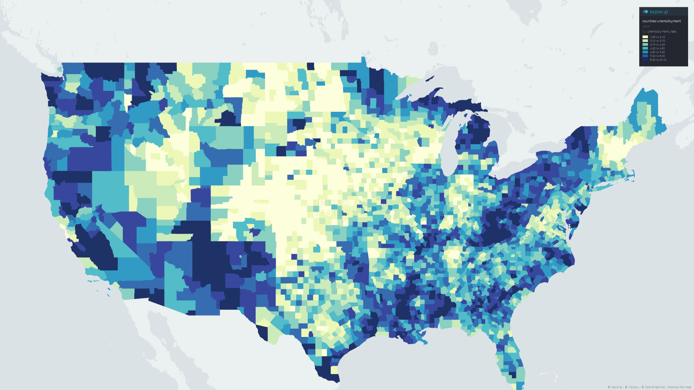
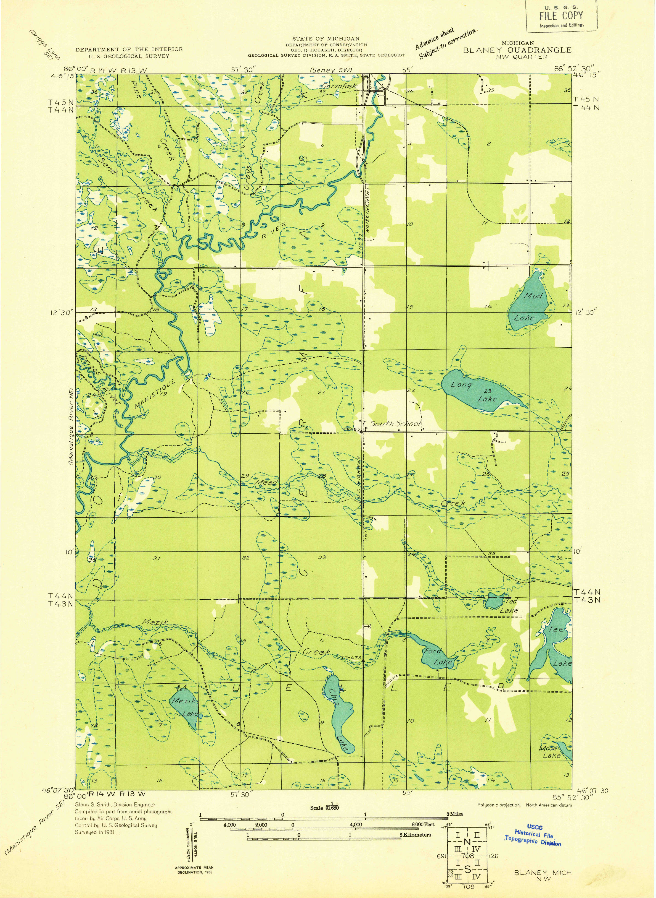

The Map
A map is a symbolic depiction emphasizing relationships between elements of some space.
Some of the benefits of maps
- They help us visualize large amounts of data more easily than numeric representation.
- Visualizing allows the perception of patterns not readily visible at the indvidual level.
- Maps can allow for the visualize small-scale and large-scale properties simultaneously simultaneously.
- Visualization allows for data exploration and hypothesis formation.
- They help us tell stories.
Two types of maps
- Reference Maps
- Thematic Maps
Example of a Thematic Map

Example of a Reference Map

Four Steps of Map-making
- Form a question.
- Collect data.
- Process data.
- Visualize.
What is cartography?
CARTOGRAPHY:
the art, science, and technology of making and using maps.
The limitations of maps
- Maps are selective and symbolic.
- Maps are not without bias.
- Maps require scaling.
- Maps are distorted through projection.
- Maps are only useful for spatial information.
Geographic Data
Three attributes
- Entity. feature or phenomena of interest
- Attribute(s). proerties of the entity
- Location. absolute or relative position of a feature in space.
Visualization
the process of creating images, diagrams, etc. for communicating with an audience.